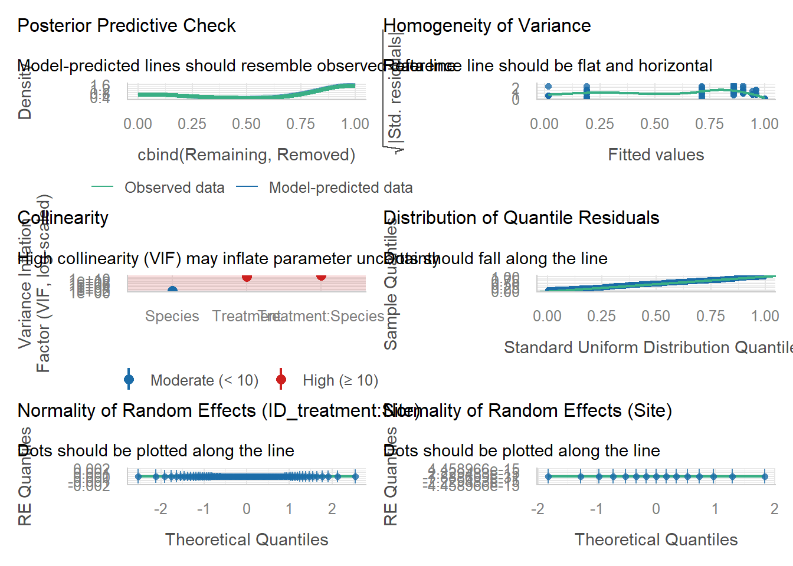
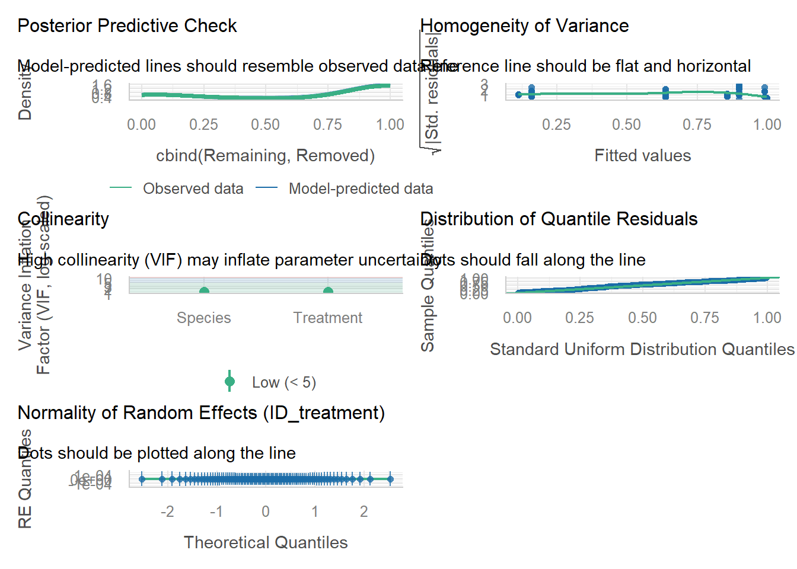

The goal of this assignment is to apply the tools and approaches we’ve learned during this course to critique, and then expand on, a statistical analysis.
Please submit this assignment via GitHub by 2 November.
Read & reflect
Read the article “Do native land crabs hinder forest regeneration on Socorro Island?” (Luna-Zuniga et al. 2025). Describe: [2 pt]
The primary question(s) the authors are trying to answer. Why the forests on the island havent had effective regeneration over the past 30 years and if the lab crab predation on seeds could be the cause.
To do this, they characterized the current forest species distribution, measured recruitment, see if land crabs are reducing recruitment due to predation, and look into other factors that could contribute to the decline in regeneration/recruitment.
The experimental and sampling design.
The researchers did vegetation surveys in three types of habitat (TDF, TEF, and MCF) and ended up choosing 18 vegetation plots (50x10m) where they identified and counted all of the 5 predetermined tree species, categorizing them by life stage (seedling, sapling, adult). if trees were saplings or adult, their diameter at breast height was measured. in each plot, a 50x1m section was taken from the middle to count and identify the seedlings, then they took this density and multiplied it by 10 to standardized the sample area to 500m2. Historic data was standardized in a similar way for comparison.
And experiment was run where crab vs no crab environments were tested for each species of tree. 17 sites, (3-6 per species of interest) each site had 10 paired exclosures each containing 10 seeds. These areas were monitored to count emerging seedlings and evaluate their survival five months after the first seed placement, four months after the second seed placement and three, seven and eight months after the last seed placement to get germination and survival percentages
The statistical approach used.
Survey: GLMM with negative binomial with glmmTMB and car
number of individuals per plot = lifestage + species + forest type + (speciesforest type) + (specieslifestage) + (1|plot ID)
emmeans determined effect size of lifestage
DBH comparison across species= probability density histogram for each species weibull cirve superimposed on each histogram for parameterization
Experiment: GLMM with binomial with glmmTMB and car
proportion of remaining seeds after 10days/10= treatment*species + (1|treatment ID)
global germination percentage and survival rates were calculated
Packages: readxl package (Wickham and Bryan, 2023) ggplot2 (Wickham, 2016) dplyr package (Wickham et al., 2023) fitdistrplus
Imagine you are reviewing this manuscript prior to its publication. Provide a constructive critique of the statistical analyses as they relate to the experimental and sampling design. What did they do well? What would be improved? [3 pt]
It seems like nesting in the experimental design might not be completely accounted for. Theoretically, the seeds are nested in the two treatments (no crab vs crab), each of these paired treatments are tested 10 times per site and there are 17 sites. The researchers have a treatment ID as a random effect (control vs crab) in order to account for differences inherent to the location of the paired locations of the 10 experiments within a site. This doesn’t take into account the fact the the treatment ID is nested within site.
proportion of remaining seeds after 10days/10= treatment*species + (1|site/treatment ID)
Re-analysis
The data associated with this paper are available here: https://figshare.com/articles/dataset/Luna-Zuniga_etal_Regeneration_Socorro-Island_xlsx/29144249/1?file=54804050. Note that the file has several header lines; remove these in Excel prior to importing the data into R or use readxl.
Based on your critique of the statistical approach taken by Luna-Zuniga et al. (2025), re-analyze the data to evaluate the effect of Johngarthia oceanica on the structure and composition of these island forests, specifically focusing on the seed predation experiment.
Use the code chunk below to load packages and the data. [0.5 pt]
# Paste your code in here!library(DHARMa)
Warning: package 'DHARMa' was built under R version 4.5.2
library(tidyverse)
Warning: package 'ggplot2' was built under R version 4.5.2
library(readr)library(car)
Warning: package 'car' was built under R version 4.5.3
library(glmmTMB)library(performance)
Warning: package 'performance' was built under R version 4.5.3
library(ggeffects)
Warning: package 'ggeffects' was built under R version 4.5.2
library(emmeans)
Warning: package 'emmeans' was built under R version 4.5.3
Species Site ID_treatment Treatment
Length:179 Length:179 Length:179 Length:179
Class :character Class :character Class :character Class :character
Mode :character Mode :character Mode :character Mode :character
Total_seeds Removed Remaining Latitude Longitude
Min. :10 Min. : 0.000 Min. : 0.000 Min. :18.79 Min. :-111
1st Qu.:10 1st Qu.: 0.000 1st Qu.: 2.000 1st Qu.:18.79 1st Qu.:-111
Median :10 Median : 0.000 Median :10.000 Median :18.79 Median :-111
Mean :10 Mean : 3.346 Mean : 6.654 Mean :18.79 Mean :-111
3rd Qu.:10 3rd Qu.: 8.000 3rd Qu.:10.000 3rd Qu.:18.79 3rd Qu.:-111
Max. :10 Max. :10.000 Max. :10.000 Max. :18.79 Max. :-111
Altitude
Min. :713.0
1st Qu.:766.0
Median :808.0
Mean :792.8
3rd Qu.:816.0
Max. :834.0
Data exploration
Explore the data visually using ggplot2. [0.5 pt]
# Paste your code in here!dat <- dat %>%mutate(Prop_remaining = Remaining / Total_seeds)dat <- dat %>%mutate(Removed = Total_seeds - Remaining)dat %>%#looking for the unpaired treatment idgroup_by(Site, ID_treatment) %>%filter(n() ==1) %>%select(Site, ID_treatment, Species, Treatment, Remaining, Removed)
# A tibble: 1 × 6
# Groups: Site, ID_treatment [1]
Site ID_treatment Species Treatment Remaining Removed
<chr> <chr> <chr> <chr> <dbl> <dbl>
1 Ilex 1 I1-4 Ilex Control 10 0
ggplot(dat, aes(x = Treatment, y = Prop_remaining, fill = Species)) +geom_boxplot(width =0.5, color ="black", alpha =0.4,position =position_dodge(0.8)) +geom_jitter(aes(color = Species), position =position_jitterdodge(jitter.width =0.1, dodge.width =0.8),alpha =0.7) +coord_cartesian(ylim =c(0, 1)) +theme_classic()
Based on the experimental and sampling design, which variables should be considered as fixed effects? Which could be considered as random effects? What distributions should be considered? [1 pt]
Fixed: treatment, species, their interaction
Random: site, treatment id nested in site
distributions: binomial with the logit link funtion (using our count data of success/failure for each seed) switched to beta/binomial
Analysis
Develop a set of generalized linear mixed-effects models that reflect the structures described above. Include a model that includes the same response variables as Luna-Zuniga et al. (2025). [1 pt]
# Paste your code in here!m0 <-glmmTMB( #my proposed model with nestingcbind(Remaining, Removed) ~ Treatment * Species + (1| Site/ID_treatment),family = binomial,data = dat)m1 <-glmmTMB( #what the paper suggestedcbind(Remaining, Removed) ~ Treatment * Species + (1| ID_treatment),family = binomial,data = dat)m2 <-glm( #no random effectscbind(Remaining, Removed) ~ Treatment * Species,family = binomial,data = dat)m3 <-glmmTMB( #additivecbind(Remaining, Removed) ~ Treatment + Species + (1| Site/ID_treatment),family = binomial,data = dat)#beta binomm4 <-glmmTMB( #additive beta binomcbind(Remaining, Removed) ~ Treatment + Species + (1| Site/ID_treatment),family =betabinomial(link ="logit"),data = dat)m5 <-glmmTMB( #interaction with beta binomcbind(Remaining, Removed) ~ Treatment * Species + (1| Site/ID_treatment),family =betabinomial(link ="logit"),data = dat)
Warning in finalizeTMB(TMBStruc, obj, fit, h, data.tmb.old): Model convergence
problem; singular convergence (7). See vignette('troubleshooting'),
help('diagnose')
# Overdispersion test (using simulated residuals)
dispersion ratio = 1.019
p-value = 0.664
No overdispersion detected.
check_model(m5)
`check_outliers()` does not yet support models of class `glmmTMB`.

check_collinearity(m5)
Model has interaction terms. VIFs might be inflated.
Try to center the variables used for the interaction, or check
multicollinearity among predictors of a model without interaction terms.
# Check for Multicollinearity
Moderate Correlation
Term VIF VIF 95% CI adj. VIF Tolerance Tolerance 95% CI
Species 6.19 [ 4.84, 8.01] 2.49 0.16 [0.12, 0.21]
High Correlation
Term VIF VIF 95% CI adj. VIF Tolerance
Treatment 1.66e+11 [1.26e+11, 2.19e+11] 4.08e+05 6.02e-12
Treatment:Species 8.51e+11 [6.47e+11, 1.12e+12] 9.22e+05 1.18e-12
Tolerance 95% CI
[0.00, 0.00]
[0.00, 0.00]
summary(m6)
Family: betabinomial ( logit )
Formula:
cbind(Remaining, Removed) ~ Treatment + Species + (1 | ID_treatment)
Data: dat
AIC BIC logLik -2*log(L) df.resid
444.8 467.1 -215.4 430.8 172
Random effects:
Conditional model:
Groups Name Variance Std.Dev.
ID_treatment (Intercept) 5.036e-09 7.097e-05
Number of obs: 179, groups: ID_treatment, 90
Dispersion parameter for betabinomial family (): 1.42
Conditional model:
Estimate Std. Error z value Pr(>|z|)
(Intercept) 2.1734 0.4389 4.952 7.35e-07 ***
TreatmentExclusion 3.8302 0.3730 10.268 < 2e-16 ***
SpeciesIlex -1.6112 0.5262 -3.062 0.0022 **
SpeciesPsidium -3.8347 0.5278 -7.265 3.72e-13 ***
SpeciesSideroxylon -4.2297 0.5585 -7.573 3.64e-14 ***
---
Signif. codes: 0 '***' 0.001 '**' 0.01 '*' 0.05 '.' 0.1 ' ' 1
check_overdispersion(m6)
# Overdispersion test (using simulated residuals)
dispersion ratio = 1.012
p-value = 0.848
No overdispersion detected.
check_model(m6)
`check_outliers()` does not yet support models of class `glmmTMB`.

check_collinearity(m6)
# Check for Multicollinearity
Low Correlation
Term VIF VIF 95% CI adj. VIF Tolerance Tolerance 95% CI
Treatment 1.34 [1.17, 1.68] 1.16 0.74 [0.59, 0.85]
Species 1.34 [1.17, 1.68] 1.16 0.74 [0.59, 0.85]
You are calculating adjusted predictions on the population-level (i.e.
`type = "fixed"`) for a *generalized* linear mixed model.
This may produce biased estimates due to Jensen's inequality. Consider
setting `bias_correction = TRUE` to correct for this bias.
See also the documentation of the `bias_correction` argument.
Some of the focal terms are of type `character`. This may lead to
unexpected results. It is recommended to convert these variables to
factors before fitting the model.
The following variables are of type character: `Treatment`, `Species`
Some of the focal terms are of type `character`. This may lead to
unexpected results. It is recommended to convert these variables to
factors before fitting the model.
The following variables are of type character: `Treatment`, `Species`
Which model would you choose as your final model? Why is that model preferred over the others? [1 pt] I would choose m6, because even though the AIC for m5 is lower, m6 is better for interpreting the coefficients (estimates are more stable, less error) but it ignores the species effect that is clear in m5. m5 is dealing with a seperation issue (not perfectly paired)
Generate model predictions (using the ggeffects package) and plot the predictions over observed data. Describe your results. [1.5 pt]
How do your results compare to those presented by Luna-Zuniga et al. (2025)? [1 pt]
emmeans(m6, pairwise ~ Treatment | Species, type ="response")
$emmeans
Species = Guettarda:
Treatment prob SE df asymp.LCL asymp.UCL
Control 0.8978 0.04030 Inf 0.78805 0.9541
Exclusion 0.9975 0.00144 Inf 0.99224 0.9992
Species = Ilex:
Treatment prob SE df asymp.LCL asymp.UCL
Control 0.6370 0.07010 Inf 0.49210 0.7606
Exclusion 0.9878 0.00578 Inf 0.96935 0.9952
Species = Psidium:
Treatment prob SE df asymp.LCL asymp.UCL
Control 0.1596 0.03740 Inf 0.09911 0.2469
Exclusion 0.8974 0.02980 Inf 0.82258 0.9429
Species = Sideroxylon:
Treatment prob SE df asymp.LCL asymp.UCL
Control 0.1134 0.03380 Inf 0.06204 0.1983
Exclusion 0.8549 0.03990 Inf 0.75837 0.9171
Confidence level used: 0.95
Intervals are back-transformed from the logit scale
$contrasts
Species = Guettarda:
contrast odds.ratio SE df null z.ratio p.value
Control / Exclusion 0.0217 0.0081 Inf 1 -10.268 <0.0001
Species = Ilex:
contrast odds.ratio SE df null z.ratio p.value
Control / Exclusion 0.0217 0.0081 Inf 1 -10.268 <0.0001
Species = Psidium:
contrast odds.ratio SE df null z.ratio p.value
Control / Exclusion 0.0217 0.0081 Inf 1 -10.268 <0.0001
Species = Sideroxylon:
contrast odds.ratio SE df null z.ratio p.value
Control / Exclusion 0.0217 0.0081 Inf 1 -10.268 <0.0001
Tests are performed on the log odds ratio scale
Over all they agree about the general conclusion that crab exclusion improves seed survival and even without the species interaction, the species follow the same trends. my model does lessen the extreme results for sideroxylon due to the lack of the interaction.
Provide summary statements about the quality of your analysis, including any potential limitations or caveats. [1 pt] my chosen model (m6) uses a different distribution (beta-binomial) that helps with the over dispersion. My model removes the interaction, but keeps the same random effect. I can’t tell if their response variable is looking at the same thing, because they describe it as a proportion. I think because they weight it by 10, it should be equivilent to the original counts which is what I thought was the best fit. I think the analysis I did has improvements in some regards but is falling short in some ways. One limitation is that I chose a model that doesn’t include the interaction even though, biologically, I believe it is relevant. I think more work could be done to find a way to avoid overdispersion, and high standard errors (caused by the sepreation issues), but I couldn’t figure it out myself.
AI statement
If you used AI for this assignment, please describe your use, including:
1. What tool or service did you use? Chatgpt
2. What was the specific purpose or use? trouble shooting my ggplots for data exploration. It helped make them more legible than I was able to alone. 3. How did this use enhance your understanding of the topic/code? Helped reinforce ggplot formats, and build references for future work